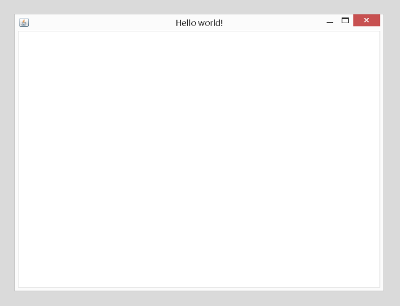

Lumpi ought to be a simple framework for developing desktop applications in the Java language. It will hopefully grow into becoming what is usually considered an application framework. But even at this early stage in devolopment it's already a good starting point for developing lightweight, but also possibly sophisticated applications.
Although the project will evolve, it is not planned to let it grow to a size comparable to NetBeans RCP or Eclipse RCP. These frameworks seem to be great of their own, but appear to be very heavyweight and complex to understand.
The Swing Application Framework comes close in terms of lightweightness, but Lumpi is more inspired by another project that came up quite at the same time, Spring RCP. I gave a spin to both of them, but not only that these projects seem to be abandoned, there were also certain reasons why these projects didn't survive. But somehow I really liked the concept of Spring RCP, combining UIs and dependency injection, although the use of the underlying Spring Framework itself was terribly complicated at that time. What is the bigger issue? Solving the problem of wiring your components togethe ror writing tons of XML-configuration files?
But Spring has become much, much easier to configure over the past years, especially because oft he usageof annotations for configuration. At some time I decided to create something similar by myself. It was at the time that the active development of Swing got stuck and I didn't want to switch over to JavaFX making its first steps. So I came across Apache Pivot, a nice little UI-toolkit, capable of performing basic DI. This is what Swing should have had years ago...
Luckily, Pivot turned out to be very extensible, so I finally managed to combine it with the Spring Framework. So in the end, the whole world of Spring is at your fingertips. It is easy to combine every library with Lumpi that integrates with Spring. And there are quite a lot of them. For that reasons, one should be able to build quite sophisticated applications while using a lightweight toolkit for the GUI. So there is no need to learn about complex RCPs. Some might argue, you are instead faced with the complexity of Spring instead. And that's true in some way. But Spring also offers the ability to build client applications that benefit from well established design patterns derived from server programming, somewhat like combing JEE and JSE. Give it a try, and you'll be surprised how "complexity" can make your life much easier...
First of all, grab the latest source release from GitHub, or check out the sources directly. Java 8 is requiredto compile. You also have to provide the dependencies. Lumpi currently depends on Commons Lang, Commons BeanUtils and, of course, Pivot and the Spring Framework. Simply grab the latest versions and you should be fine. It is not needed to provide all the jars of Pivot and Spring. The minimum of required jars are listed here:
| Dependency | Version | Jars |
| Apache Commons BeanUtils | >= 1.9.x | commons-beanutils-1.9.x.jar |
| Apache Commons Lang | >= 3.x | commons-lang-3-3.x.x.jar |
| Apache Commons Validator | >= 1.4.x | commons-validator-1.4.x.jar |
| Apache Pivot | >= 2.x.x | pivot-core-2.x.x.jar, pivot-wtk-2.x.x.jar, pivot-wtk-terra-2.x.x.jar |
| Spring Framework | >= 4.x.x | spring-core-4.x.x.jar, spring-context-4.x.x.jar, spring-beans-4.x.x.jar, spring-aop-4.x.x.jar |
Note! There are some transient dependencies for some of those libraries which are not listed here. Make sure to include them, perhaps read the according documentation provided elsewhere.
At this point, it should be mentioned, that it's mandatory to learn about the concepts of Pivot and Spring itself, before you should begin using Lumpi. That's because for now Lumpi combines these frameworks, rather than putting an abstract wrapper around it. Due to that fact, creating your GUI basically means creating it in the same way as you would do using plain Pivot. Everything else, e.g. the business logic, implies implementing it in form of a special ApplicationContext called LumpiApplicationContext which is derived directly from Spring. And it behaves as you would exspect from Spring, if your are used to it. For those fearing XML, just relax, all configuration related to Spring has to be done using its annotation-based approach. There is no support for XML-configuration.
While this is true, all objects created in the Pivot configuration (a.k.a. the BXML-file) are created through an ApplicationContext provided by Spring, resulting in all beans already made available at the time your UI-classes are created (using the ApplicationContext, too), and might therefore be injected and referenced at initialization. Simply use Spring's capabilities for autowiring.
And there is one more extension (or broken convention) in behavior compared to Pivot: Usually you would extend the Bindable interface to get your components injected using the @BXML annotation placed on your fields. This functionality provided by Pivot is usually limited to only a few components of your program, the so called root-containers like Windows or Dialogs. Since I found this feature to be useful for some more purposes, like using it in Actions or Tasks, injecting through @BXML is made available for every class implementing Bindable. For such use-cases specialized classes are provided within Lumpi, as you will see later on. The DI mechanism provided through Spring doesn't depend on the Bindable interface at all, and may be used apart of it.
For those really wanting a quick start, I provided a hello-world-style sample application. Just unzip it, provide the dependencies mentioned above and you are ready for take-off. Read on how to use it.
First, you have a class representing your application (SampleApplication.java), e.g. the location of your BXML-file used for building the GUI and the classes to actually configure the parts of your application (SampleConfiguration.java in this case). And last but not least you'll have to provide a class that represents your application window (SampleApplicationWindow.java). But wait! Didn't I mention an ApplicationContext in need to be configured? Yes I did. There is a default implementation built in already. It is extendable in fact, but for now there is no need to do anything like that.
Now it is time to dive into the files contained in the sample application. Let's start with our application class itself, imports and package declarations are omitted. It basically implements the LumpiApplication interface and therefore defines two methods:
| Method | Explanation | |
| public Collection<Class<?>> getBeanConfigurationClasses(); | Returns a Collection representing the classes providing the bean definitions our application will consist of. These classes are configured mostly through annotations supported by the Spring IoC. | |
| public URL getBXMLConfigurationFile(); | Returns the URLto the BXML-file used for GUI creation. It may be contained within the application's jar-file (like in the example) or located elsewhere. | |
| public static void main(String[] args); | The well-known main-method> needed to startup the application by using the ApplicationLauncher class responsible for bootstrapping. |
And here are the complete sources:
public class SampleApplication extends AbstractLumpiApplication {
public static final String APPLICATION_PACKAGE_URL = "/org/moosbusch/lumPi/sample/";
@Override
public Collection<Class<?>> getBeanConfigurationClasses() {
Collection<Class<?>> result = super.getBeanConfigurationClasses();
result.add(SampleConfiguration.class);
return result;
}
@Override
public URL getBXMLConfigurationFile() {
return getClass().getResource(APPLICATION_PACKAGE_URL + "sampleApplication.bxml");
}
public static void main(String[] args) {
ApplicationLauncher.main(SampleApplication.class);
}
}It's plain to see, it extends an abstract base class, AbstractLumPiApplication, and this is the very point everybody should start from. Usually there should be no need to implement the LumPiApplication interface itself. And you shouldn't subclass the original classes provided by plain Pivot itself, namely Windows, Dialogs, Sheets, Prompts, Actions and Tasks. You should always prefer using the corresponding subclasses provided by Lumpi. You may face strange behavior otherwise. Make sure to have a closer look at the source packages for now. There will be a more comprehensive documentation coming up soon.
The next file to mention is SampleConfiguration.java. It contains definitions for creating Spring beans. The class is annotated with @Configuration, marking it a class containing configuration data. You have to include each of those files (you may create virtually as manyas you want) in the getBeanConfigurationClasses() method of your application-class. Also make sure that exactly one of the classes contained within that List, all annotated with @Configuration, implements the PivotBeanConfiguration interface! An Exception will be thrown otherwise. If you have a closer look at the code of our sample application, you will notice that there is some existing configuration in use:
@Override
public Collection<Class<?>> getBeanConfigurationClasses() {
Collection<Class<?>> result = super.getBeanConfigurationClasses();
result.add(SampleConfiguration.class);
eturn result;
}In fact, there have to be definitions for the way of creating every single kind of object provided by Pivot, Buttons, Windows, Labels and so on. A default implementation is already provided ready for use. If you are willing to replace the defaults, this is the place to hook in your replacements.
But here are the sources of our configuration:
public class SampleConfiguration extends AbstractPivotBeanConfiguration<SampleApplicationWindow> {
@Bean
@Lazy
@Scope(BeanDefinition.SCOPE_SINGLETON)
@Override
public SampleApplicationWindow createApplicationWindow() {
return new SampleApplicationWindow();
}
}While there is virtually nothing more to say about this class (provided that you are familiar to the Spring IoC, else refer to its documentation) we can proceed to our last Java class: SampleApplicationWindow . As you should already have guessed, this will act as the main window of our application. Its only method has to be implemented according to Pivot's Bindable interface where UI-related configuration, especially data-binding,usually takes place.
public class SampleApplicationWindow extends BindableWindow {
@Override
public void initialize(Map<String, Object> namespace, URL location, Resources resources) {
}
}This has been all of the Java related stuff. Let us see how we might get harmed by the need of assembling our GUI by using XML. I will only show you the markup needed for the sample application. It is very tiny and simple. Of course, if you will be doing some real stuff, it will grow and the class representing the application window will also grow in size. But the markup used by Pivot has a modular design and is well documented. Refer to its documentation, as it could be taken as is.
So finally, here is our “verbose“ BXML-file:
<?xml version='1.0' encoding='UTF-8'?>
<window:SampleApplicationWindow bxml:id="applicationWindow"
preferredWidth="800" preferredHeight="600"
maximized="true" title="Hello world!"
xmlns:bxml="http://pivot.apache.org/bxml"
xmlns:window="io.github.moosbusch.lumpi.sample.gui.window.impl"
xmlns="org.apache.pivot.wtk"/>Neat, isn't it? A little markup, basically denoting the class used for our application window, default size, title, application specific id. That's all there is to it. Finally, let's see the result. Here is a screenshot of our minimal sample application:

This should have been a concise, but sufficient set of information on how to get started with Lumpi, or at least to make clear what it's able to do. If you're interested, I'll soon come up with some more detailed information on my blog, showing how to develop a real world application.